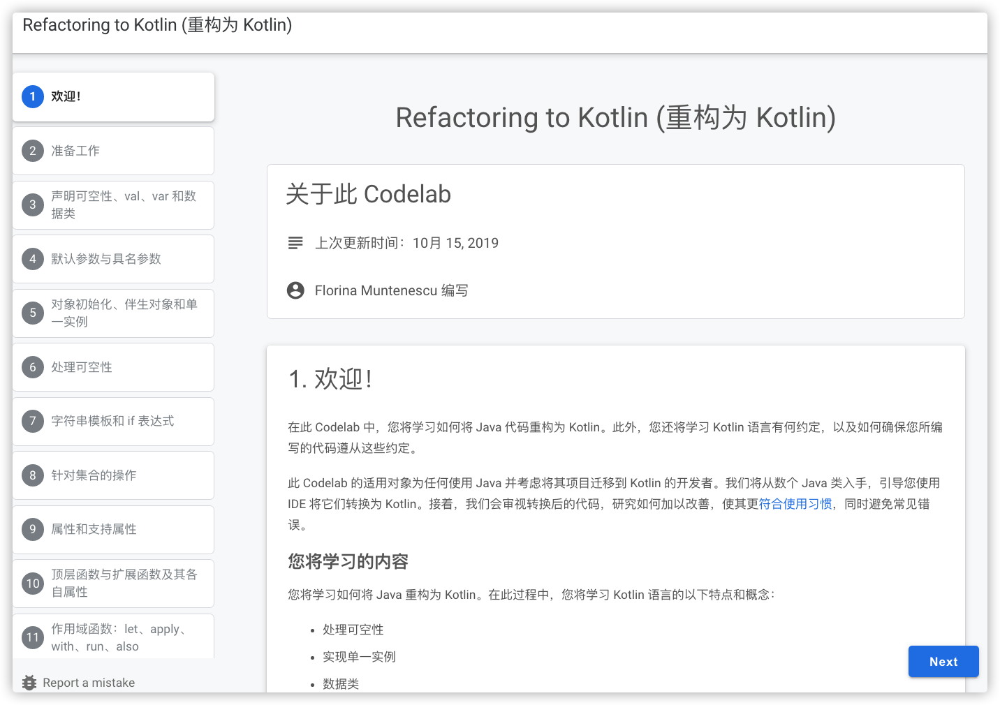
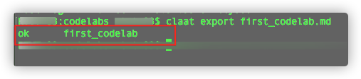
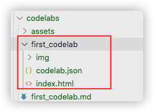
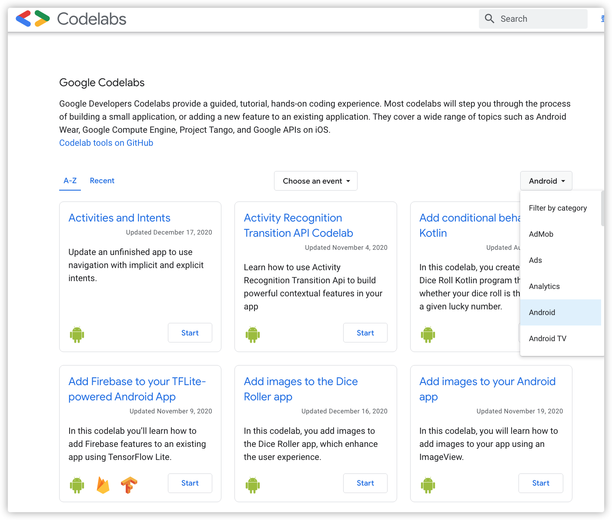
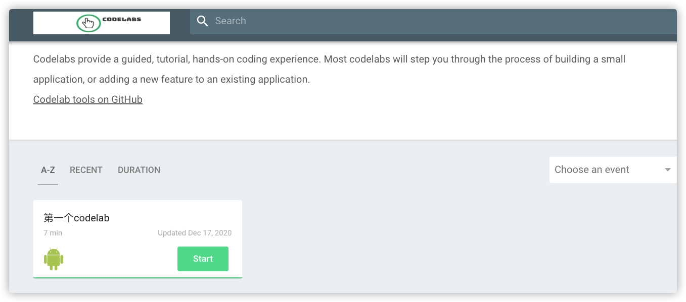
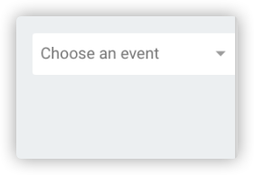
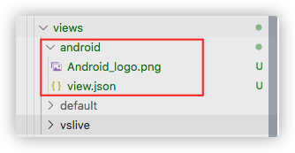
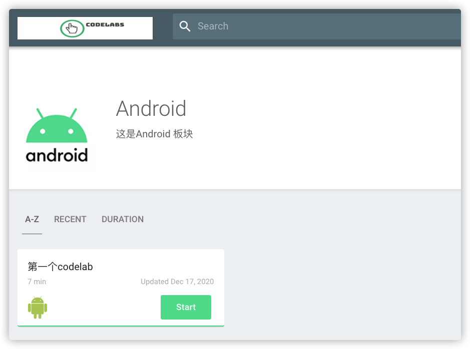

安装版本为NodeJs-12.12.0
mkdir -p /opt/softs
cd /opt/softs
wget https://nodejs.org/download/release/v12.12.0/node-v12.12.0-linux-x64.tar.gz
cd /opt/softs
tar -zxvf node-v12.12.0-linux-x64.tar.gz
vim /etc/profile
添加如下内容
#nodejs
export PATH=/opt/softs/node-v12.12.0-linux-x64/bin:${PATH}
source /etc/profile
[root@vms88 site]# node -v
v12.12.0
npm config set registry http://registry.npm.taobao.org
npm config get registry
npm install -g gulp
npm install gulp
cd /opt/softs
wget https://dl.google.com/go/go1.15.6.linux-amd64.tar.gz
tar -zxvf go1.15.6.linux-amd64.tar.gz
mv go go1.15.6
vim /etc/profile
#go
export GOPATH=/home/go/workspace
export GOROOT=/opt/softs/go1.15.6
export PATH=$GOROOT/bin:$PATH
export PATH=$GOPATH/bin:$PATH
[root@vms88 ~]# go version
go version go1.15.6 linux/amd64
go get github.com/googlecodelabs/tools/claat
这个地方如果出现网络问题，可以配置一个全局代理用于科学上网
代理配置参考如下
vim /etc/profile
#上网代理
export http_proxy=http://192.168.26.1:1080
export https_proxy=http://192.168.26.1:1080
git clone https://github.com/googlecodelabs/tools
在刚clone 代码site 下新建一个codelabs目录（在那件文件夹都可以，为了方便下面操作就这样建立文件夹了），在codelabs在创建一个assets 用于存放图片等资源
在codelabs 添加一个first_codelab.md文件，内容如下
summary: 测试，第一个codelab
id: first_codelab
categories: Android
tags: android
status: Published
authors: kk
Feedback Link: https://github.com/wkk-knight/
<!-- 标题 用一级-->
# 第一个codelab
<!------------------- 步骤1 步骤用二级标签 --------------->
## 开始学习
<!-- 这一步估计需要的时间-->
Duration: 1
<!-- 第一步的内容 start -->
### 啦啦啦
测试
写你想写的内容
用md语法写就行
<!-- 第一步的内容 end -->
<!-------------------- 步骤 2------------------------>
## 学会了吗？
Duration: 2
<!-- 第二步的内容 start -->
学会了吗？
来点代码
```kotlin
fun main() {
println("hello world")
}
<!-- 第二步的内容 end -->
<!-------------------- 步骤 3------------------------>
## 学废了吗？
Duration: 3
<!-- 第三步的内容 start -->
学废了吗？
再来点代码
```kotlin
fun main() {
println("hello world")
}
```
<!-- 第三步的内容 end -->
<!-------------------- 步骤 3------------------------>
## 结束
Duration: 1
根据上面的md文件生成对应html文件，执行下面命令
claat export first_codelab.md
执行结束，看到ok就说明执行成功了

执行成功后会发现对应的html文件

把index.html打开就可以看到效果了

这个界面的代码也是引用的，就在我们刚才下载的代码site目录下，安装site目录下的ERADME.md 我们来运行一下。
## 进入site目录
cd site
##安装依赖
npm install
## 启动服务
gulp serve
服务启动后 打开 http://localhost:8000 就可以看到效果了
把我们刚才写的codelab 显示在列表中，我们使用下面命令部署列表
#启动的时候指定codelabs所在的目录
gulp serve --codelabs-dir=codelabs

在列表的又上角有个下拉菜单，可以选择类别，默认有个Visual Studio Live 版本，我们也可以自己添加一个 比如Android

在site/app/views 下面创建类别文件夹

文件夹需要一个logo图片（svg 或者125x125的png图片）还有一个view.json的文件 用来描述页面内容 view.json
{
"title": "Android",
"description": "这是Android 板块",
"logoUrl": "/android/Android_logo.png",
"tags": ["android"]
}

在上面执行完 gulp serve --codelabs-dir=codelabs 命令后，就生成一个build文件，这个文件中就是静态的html 文件，可以部署到github pages 上或者自己服务器
还有一种打包方式是
#打包并启动服务
gulp serve:dist --codelabs-dir=codelabs
#直接打包，不启动服务
gulp dist --codelabs-dir=codelabs
这种输入的静态文件在dist中，代码会压缩体积更小
还可以直接使用nginx代理dist目录
补充
可以将codelabs配置一个systemd服务,这样生产好的网页就可以直接访问了
创建一个启动脚本
cd /opt/softs/codelabs/tools/site
vim startup.sh
#!/bin/bash
export PATH=/opt/softs/node-v12.12.0-linux-x64/bin:${PATH}
cd /opt/softs/codelabs/tools/site
gulp serve --codelabs-dir=codelabs &
创建一个systemd服务
vim /usr/lib/systemd/system/codelabs.service
内容如下:
[Unit]
Description=codelabsservice daemon
After=syslog.target network.target
[Service]
Type=forking
Environment=NODEJS_HOME="/opt/softs/node-v12.12.0-linux-x64"
ExecStart=/opt/softs/codelabs/tools/site/startup.sh
SuccessExitStatus=143
PrivateTmp=true
User=root
Group=root
[Install]
WantedBy=multi-user.target